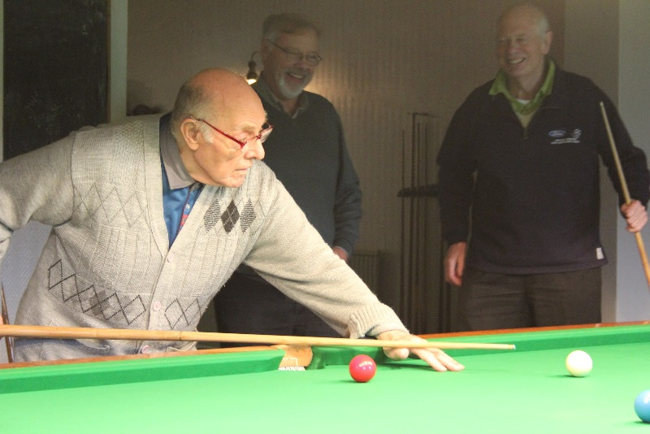

Activities

People have enjoyed playing billiards for a long time. It started as a game played outside on the grass in Europe a long time ago. Now, lots of people play it inside in different places like game rooms, hotels, and bars. It can be played by anyone, no matter the age or gender.
Lessons Lvl.1
For the beginner levels we have prepared special billiards tables with special kit. As well as equipment, you will have a coach to explain the logic of the game and all the steps for a successful game
Lessons Lvl.2
At this level, things should be easier for every player, and the most important aspect of level 2, is practice, and the more you do it, the better is you game
Pro Lessons
Being good, or very good at something, gives you a certain amount of confidence, and with the pro level training, leaves you with only the details that can make the difference in a billiards game